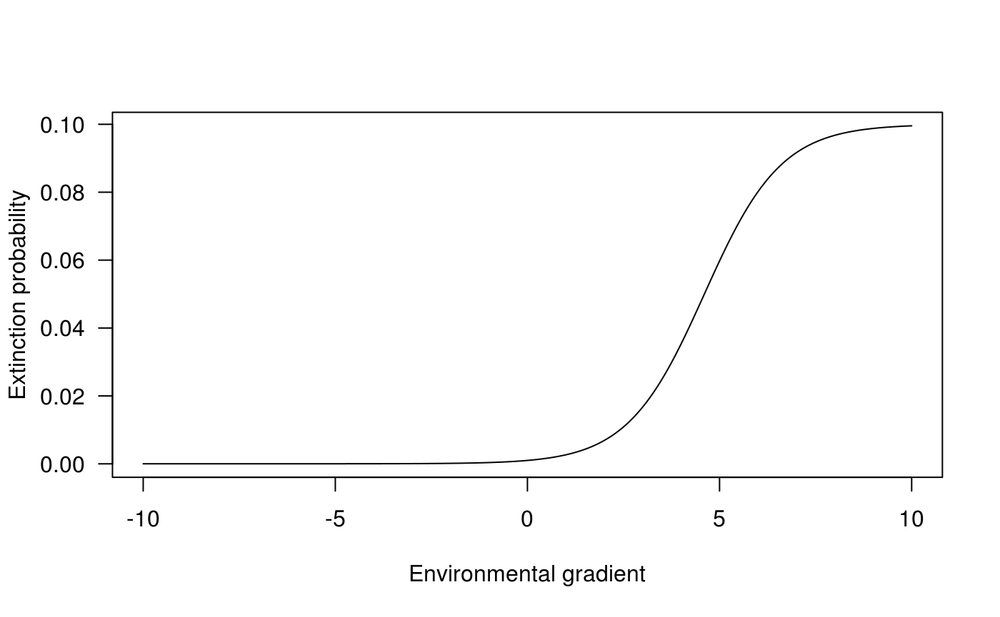

library(biogeonet)
Philosophy
In Cazelles1, we basically expand the classical Theory of Island Biogeography2 to include ecological interactions and a link to the environmental niche. To do so we:
- simulated ecological networks of 10 species using the niche model3
- link the simulated ecological interactions to extinction probability
- link an arbitrary environmental gradient to the colonization probability
- use all the steps above to create the transition matrix of a Markov chain (from any of the \(2^{10}\) communities to any other) and then solve it to obtain the presence absence of all communities.
Niche model
To simulate I use the niche model that I implemented in nicheModel(). The first parameters, nbsp, determines the number of species:
nicheModel(nbsp = 5, .2, 1) #> [,1] [,2] [,3] [,4] [,5] #> [1,] 0.0000000 0.0000000 0.00000000 0.33236422 0.0000000 #> [2,] 0.0000000 0.0000000 0.00000000 0.03608205 0.0000000 #> [3,] 0.0000000 0.0000000 0.00000000 0.77903683 0.0000000 #> [4,] -0.2483893 -0.2615522 -0.03363379 -0.56977655 0.7670426 #> [5,] 0.0000000 0.0000000 0.00000000 -0.08233662 0.0000000 nicheModel(nbsp = 10, .2, 1) #> [,1] [,2] [,3] [,4] [,5] [,6] #> [1,] 0.00000000 0.0000000 0.3841360 0.85394965 0.0000000 0.0000000 #> [2,] 0.00000000 -0.3750247 -0.9981889 0.95745936 0.0000000 0.0000000 #> [3,] -0.98501505 0.8154719 0.0000000 0.66046801 0.0000000 0.0000000 #> [4,] -0.02846291 -0.5160620 -0.4495050 -0.92402186 0.0000000 0.4072649 #> [5,] 0.00000000 0.0000000 0.0000000 0.00000000 0.0000000 0.2341506 #> [6,] 0.00000000 0.0000000 0.0000000 -0.62204806 -0.2942034 -0.3762614 #> [7,] 0.00000000 -0.4999713 -0.5694014 -0.01884913 -0.6807970 0.6601791 #> [8,] 0.00000000 -0.7282874 -0.1698769 0.00000000 0.0000000 0.0000000 #> [9,] -0.76358026 0.0000000 0.0000000 0.00000000 0.0000000 0.0000000 #> [10,] 0.00000000 -0.3374719 -0.3382163 -0.35345944 -0.5736737 0.0000000 #> [,7] [,8] [,9] [,10] #> [1,] 0.000000000 0.0000000 0.3642837 0.0000000 #> [2,] 0.344138852 0.8830474 0.0000000 0.8076427 #> [3,] 0.007748912 0.5956353 0.0000000 0.4507875 #> [4,] 0.347627673 0.0000000 0.0000000 0.6339386 #> [5,] 0.786232939 0.0000000 0.0000000 0.2205929 #> [6,] -0.382116071 0.0000000 0.0000000 0.0000000 #> [7,] 0.000000000 0.0000000 0.0000000 0.0000000 #> [8,] 0.000000000 0.0000000 0.0000000 0.0000000 #> [9,] 0.000000000 0.0000000 0.0000000 0.0000000 #> [10,] 0.000000000 0.0000000 0.0000000 0.0000000
The second parameter controls the expected connectance.
nicheModel(5, connec = .1, 1) #> [,1] [,2] [,3] [,4] [,5] #> [1,] 0.00000000 0.8851977 0 0.9109430 0 #> [2,] -0.06858638 0.0000000 0 0.1818991 0 #> [3,] 0.00000000 0.0000000 0 0.0000000 0 #> [4,] -0.91030452 -0.4129825 0 0.0000000 0 #> [5,] 0.00000000 0.0000000 0 0.0000000 0 nicheModel(5, connec = .4, 1) #> [,1] [,2] [,3] [,4] [,5] #> [1,] -0.9841690 0.00000000 0.29242813 0.0000000 0.0000000 #> [2,] 0.0000000 0.00000000 0.82954198 0.3879820 0.2239297 #> [3,] -0.5189022 -0.08568547 0.00000000 0.8029444 0.0000000 #> [4,] 0.0000000 -0.44476858 -0.02897205 -0.6111635 0.0000000 #> [5,] 0.0000000 -0.82795797 0.00000000 0.0000000 0.0000000
The last parameter, mode, affects the sign structure of the output matrix (not included in the original publication of the niche model):
# mode 1 + and -, refered as "predation" in Cazelles (2016) nicheModel(5, .2, mode = 1) #> [,1] [,2] [,3] [,4] [,5] #> [1,] 0.0000000 0.8030849 0.0000000 0 0.000000 #> [2,] -0.8579318 0.0000000 0.1610954 0 0.336101 #> [3,] 0.0000000 -0.2457675 -0.7525627 0 0.000000 #> [4,] 0.0000000 0.0000000 0.0000000 0 0.000000 #> [5,] 0.0000000 -0.4672883 0.0000000 0 0.000000 # mode 2, only -, refered as "competition" in Cazelles (2016) nicheModel(5, .2, mode = 2) #> [,1] [,2] [,3] [,4] [,5] #> [1,] 0.0000000 -0.8275084 -0.28216915 -0.08436808 -0.1292878 #> [2,] -0.5868197 -0.2568651 -0.02139296 -0.09211540 -0.9332288 #> [3,] -0.3046849 -0.3417499 0.00000000 0.00000000 -0.4632092 #> [4,] -0.5982661 -0.1033734 0.00000000 0.00000000 -0.6710231 #> [5,] -0.6106307 -0.2024269 -0.67715417 -0.72855328 -0.8842671 # mode 2, only +, refered as "mutualism" in Cazelles (2016) nicheModel(5, .2, mode = 3) #> [,1] [,2] [,3] [,4] [,5] #> [1,] 0.9061011 0.000000 0.1060589 0 0 #> [2,] 0.0000000 0.000000 0.2712583 0 0 #> [3,] 0.8293471 0.403457 0.2538694 0 0 #> [4,] 0.0000000 0.000000 0.0000000 0 0 #> [5,] 0.0000000 0.000000 0.0000000 0 0
See ?nicheModel for further details.
Colonization
The colonisation probability is a bell-shaped function (see ?colonization for details).
seqx <- seq(0, 10, .01) vc_colo <- sapply(seqx, FUN = colonization, 1, 5, 2) plot(seqx, vc_colo, type="l", las = 1, ylab = "Extinction probability", xlab = "Environmental gradient")

Extinction
The extinction probability is basically a flexible logistic function (see ?extinction for details)
seqx <- seq(-10, 10, .01) vc_exti <- sapply(seqx, FUN = extinction, 1e-3, 1e-2, 1e2, -1) plot(seqx, vc_exti, type="l", las = 1, ylab = "Extinction probability", xlab = "Environmental gradient")

Building Markov chain and deriving its equilibrium
For a specific vector of colonisation (1 value per species), a specific ecological networks (use to derive extinction probabilities), we can build the transition matrix of a Markov chain with buildMarkov(). So far, it builds the matrix of a continuous-time Markov chain](https://en.wikipedia.org/wiki/Markov_chain#Continuous-time_Markov_chain) ans so probabilities described above should actually be rates.
# number of species nbsp <- 4 # network web <- nicheModel(nbsp, .2, mode = 1) # colonisation vector colo <- 10^runif(nbsp, -7, -3) # mat <- buildMarkov(nbsp, colo, web, 1e-5, 1e-3, 1e3, -1) mat #> $markov #> [,1] [,2] [,3] [,4] [,5] #> [1,] -3.619764e-04 1.000000e-05 7.930139e-06 0.000000e+00 4.208889e-06 #> [2,] 5.804130e-06 -3.661723e-04 0.000000e+00 7.123548e-06 0.000000e+00 #> [3,] 3.240423e-04 0.000000e+00 -4.586422e-05 2.383297e-05 0.000000e+00 #> [4,] 0.000000e+00 3.240423e-04 5.804130e-06 -6.308648e-05 0.000000e+00 #> [5,] 1.780241e-05 0.000000e+00 0.000000e+00 0.000000e+00 -3.483829e-04 #> [6,] 0.000000e+00 1.780241e-05 0.000000e+00 0.000000e+00 5.804130e-06 #> [7,] 0.000000e+00 0.000000e+00 1.780241e-05 0.000000e+00 3.240423e-04 #> [8,] 0.000000e+00 0.000000e+00 0.000000e+00 1.780241e-05 0.000000e+00 #> [9,] 1.432754e-05 0.000000e+00 0.000000e+00 0.000000e+00 0.000000e+00 #> [10,] 0.000000e+00 1.432754e-05 0.000000e+00 0.000000e+00 0.000000e+00 #> [11,] 0.000000e+00 0.000000e+00 1.432754e-05 0.000000e+00 0.000000e+00 #> [12,] 0.000000e+00 0.000000e+00 0.000000e+00 1.432754e-05 0.000000e+00 #> [13,] 0.000000e+00 0.000000e+00 0.000000e+00 0.000000e+00 1.432754e-05 #> [14,] 0.000000e+00 0.000000e+00 0.000000e+00 0.000000e+00 0.000000e+00 #> [15,] 0.000000e+00 0.000000e+00 0.000000e+00 0.000000e+00 0.000000e+00 #> [16,] 0.000000e+00 0.000000e+00 0.000000e+00 0.000000e+00 0.000000e+00 #> [,6] [,7] [,8] [,9] [,10] #> [1,] 0.000000e+00 0.000000e+00 0.000000e+00 7.525700e-06 0.000000e+00 #> [2,] 4.208889e-06 0.000000e+00 0.000000e+00 0.000000e+00 7.525700e-06 #> [3,] 0.000000e+00 4.208889e-06 0.000000e+00 0.000000e+00 0.000000e+00 #> [4,] 0.000000e+00 0.000000e+00 4.208889e-06 0.000000e+00 0.000000e+00 #> [5,] 1.000000e-05 7.930139e-06 0.000000e+00 0.000000e+00 0.000000e+00 #> [6,] -3.525788e-04 0.000000e+00 7.123548e-06 0.000000e+00 0.000000e+00 #> [7,] 0.000000e+00 -3.227070e-05 2.383297e-05 0.000000e+00 0.000000e+00 #> [8,] 3.240423e-04 5.804130e-06 -4.949296e-05 0.000000e+00 0.000000e+00 #> [9,] 0.000000e+00 0.000000e+00 0.000000e+00 -3.551746e-04 1.000000e-05 #> [10,] 0.000000e+00 0.000000e+00 0.000000e+00 5.804130e-06 -3.593704e-04 #> [11,] 0.000000e+00 0.000000e+00 0.000000e+00 3.240423e-04 0.000000e+00 #> [12,] 0.000000e+00 0.000000e+00 0.000000e+00 0.000000e+00 3.240423e-04 #> [13,] 0.000000e+00 0.000000e+00 0.000000e+00 1.780241e-05 0.000000e+00 #> [14,] 1.432754e-05 0.000000e+00 0.000000e+00 0.000000e+00 1.780241e-05 #> [15,] 0.000000e+00 1.432754e-05 0.000000e+00 0.000000e+00 0.000000e+00 #> [16,] 0.000000e+00 0.000000e+00 1.432754e-05 0.000000e+00 0.000000e+00 #> [,11] [,12] [,13] [,14] [,15] #> [1,] 0.000000e+00 0.000000e+00 0.000000e+00 0.000000e+00 0.000000e+00 #> [2,] 0.000000e+00 0.000000e+00 0.000000e+00 0.000000e+00 0.000000e+00 #> [3,] 7.525700e-06 0.000000e+00 0.000000e+00 0.000000e+00 0.000000e+00 #> [4,] 0.000000e+00 7.525700e-06 0.000000e+00 0.000000e+00 0.000000e+00 #> [5,] 0.000000e+00 0.000000e+00 5.097426e-06 0.000000e+00 0.000000e+00 #> [6,] 0.000000e+00 0.000000e+00 0.000000e+00 5.097426e-06 0.000000e+00 #> [7,] 0.000000e+00 0.000000e+00 0.000000e+00 0.000000e+00 5.097426e-06 #> [8,] 0.000000e+00 0.000000e+00 0.000000e+00 0.000000e+00 0.000000e+00 #> [9,] 7.930139e-06 0.000000e+00 7.301092e-06 0.000000e+00 0.000000e+00 #> [10,] 0.000000e+00 7.123548e-06 0.000000e+00 7.301092e-06 0.000000e+00 #> [11,] -3.906238e-05 2.383297e-05 0.000000e+00 0.000000e+00 7.301092e-06 #> [12,] 5.804130e-06 -5.628463e-05 0.000000e+00 0.000000e+00 0.000000e+00 #> [13,] 0.000000e+00 0.000000e+00 -3.422450e-04 1.000000e-05 7.930139e-06 #> [14,] 0.000000e+00 0.000000e+00 5.804130e-06 -3.464408e-04 0.000000e+00 #> [15,] 1.780241e-05 0.000000e+00 3.240423e-04 0.000000e+00 -2.613279e-05 #> [16,] 0.000000e+00 1.780241e-05 0.000000e+00 3.240423e-04 5.804130e-06 #> [,16] #> [1,] 0.000000e+00 #> [2,] 0.000000e+00 #> [3,] 0.000000e+00 #> [4,] 0.000000e+00 #> [5,] 0.000000e+00 #> [6,] 0.000000e+00 #> [7,] 0.000000e+00 #> [8,] 5.097426e-06 #> [9,] 0.000000e+00 #> [10,] 0.000000e+00 #> [11,] 0.000000e+00 #> [12,] 7.301092e-06 #> [13,] 0.000000e+00 #> [14,] 7.123548e-06 #> [15,] 2.383297e-05 #> [16,] -4.335504e-05 #> #> $speciesRichness #> [1] 0 1 1 2 1 2 2 3 1 2 2 3 2 3 3 4 #> #> $speciesPresence #> [,1] [,2] [,3] [,4] [,5] [,6] [,7] [,8] [,9] [,10] [,11] [,12] [,13] [,14] #> [1,] 0 1 0 1 0 1 0 1 0 1 0 1 0 1 #> [2,] 0 0 1 1 0 0 1 1 0 0 1 1 0 0 #> [3,] 0 0 0 0 1 1 1 1 0 0 0 0 1 1 #> [4,] 0 0 0 0 0 0 0 0 1 1 1 1 1 1 #> [,15] [,16] #> [1,] 0 1 #> [2,] 1 1 #> [3,] 1 1 #> [4,] 1 1
then solveMarkov() returns the probabilities at equilibrium for all communities:
sol <- solveMarkov(mat$markov, continuous = TRUE) sol #> [1] 8.143621e-06 4.495148e-07 1.388899e-02 8.476522e-04 6.992460e-05 #> [6] 3.859726e-06 1.192568e-01 7.278304e-03 5.635265e-05 3.110576e-06 #> [11] 9.610974e-02 5.865628e-03 4.178675e-04 2.306561e-05 7.126752e-01 #> [16] 4.349494e-02
This gives the probability at equilibrium (sensu MacArthur & Wilson 1967) for all of the \(2^{nbsp}\) community (here nbsp=4, so there are 16 potential communities).
# NB sum to one sum(sol) #> [1] 1
In order to compute the species richness, one simply needs to compute the expectation value of the random variable that associates to every state, its species richness, i.e.:
sum(sol * mat$speciesRichness) #> [1] 2.7988
Similarly, one can compute the expected presence of all species
mat$speciesPresence %*% sol #> [,1] #> [1,] 0.05751701 #> [2,] 0.99941723 #> [3,] 0.88321993 #> [4,] 0.85864590
Reproduce the study
In Cazelles et al. (2016), we basically solved tons of those for 10 species (1024 communities), for the 3 sign structure described above and under various scenarios of connectance and environmental conditions (so a bunch of for loops using the steps described above!).
Cazelles, K., Mouquet, N., Mouillot, D. & Gravel, D. 2016. On the integration of biotic interaction and environmental constraints at the biogeographical scale. Ecography. 39, 921–931. DOI: 10.1111/ecog.01714.↩︎
MacArthur, R. H. and Wilson, E. O. 1967. Theory of island biogeography. – Princeton Univ. Press. ISBN: 0691088365.↩︎
Williams, R. J. and Martinez, N. D. 2000. Simple rules yield complex food webs. – Nature 404: 180–183.DOI:10.1038/35004572.↩︎